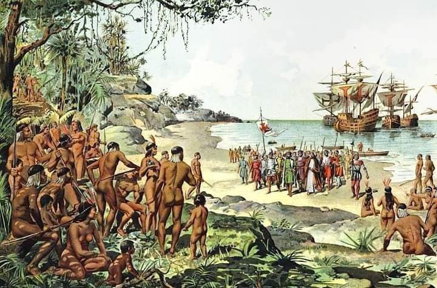
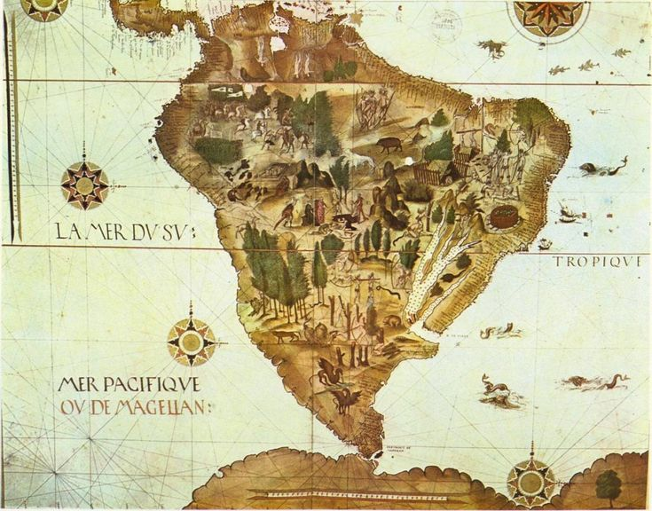

Curiosidades
- O pagamento de Pedro Álvares Cabral foi de 10 mil cruzados (o equivalente a 35 quilos de ouro). Ele também poderia comprar e vender 30 toneladas de pimenta e 10 caixas de outra especiaria. Um marinheiro comum, por sua vez, ganhava 10 cruzados mensalmente, além de 10 quintais de pimenta.
- Pedro Álvares Cabral tinha 1,90 m de altura.
- Era comum que, nessas expedições marítimas da Idade Moderna, prostitutas fossem levadas escondidas nas embarcações.
- O escorbuto (doença causada pela falta de vitamina C) era uma das doenças que mais afetavam os marinheiros no período das grandes navegações.
- O primeiro nome dado ao Brasil foi Ilha de Vera Cruz, e depois passou a se chamar Terra de Santa Cruz.
- Outro nome pelo qual o Brasil foi chamado, à época, foi Terra dos Papagaios, em decorrência da quantidade de papagaios que havia aqui.
- A Ilha de Fernando de Noronha tem esse nome em referência a Fernão de Noronha, fidalgo português que recebeu a ilha como capitania do rei de Portugal, em 1504.
- Quando a expedição de Cabral partiu do Brasil, em 2 de maio de 1500, dois grumetes desertores e dois degredados foram deixados no território com os nativos.

